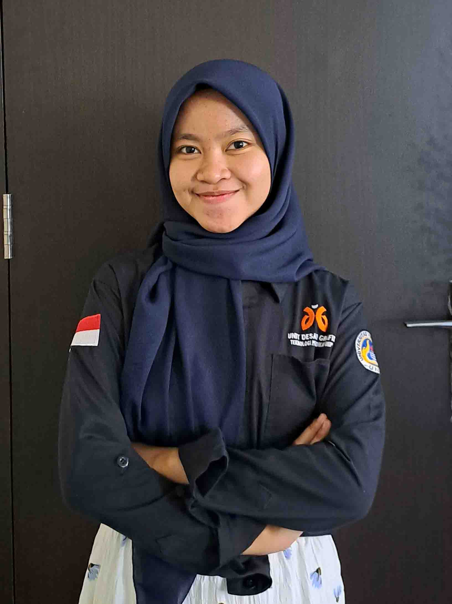

Website ini dibuat dan dikelola oleh mahasiswi Department Kurikulum dan Teknologi Pendidikan, Fakultas Ilmu Pendidikan, Universitas Negeri Padang.
Barikut profilnya:

Nama : Rahma Dini
NIM : 21004027
Alamat : Jl. Wisma Indah VII, Blok D, No.2, Parupuk Tabing, Kota Padang, Sumatera Barat
Kontak :
085273089070 rahmaadini13